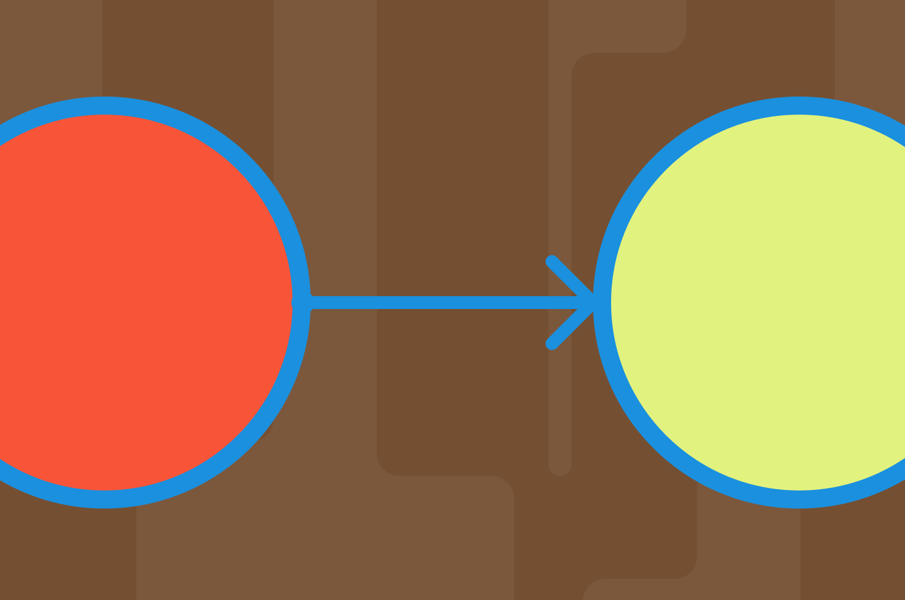
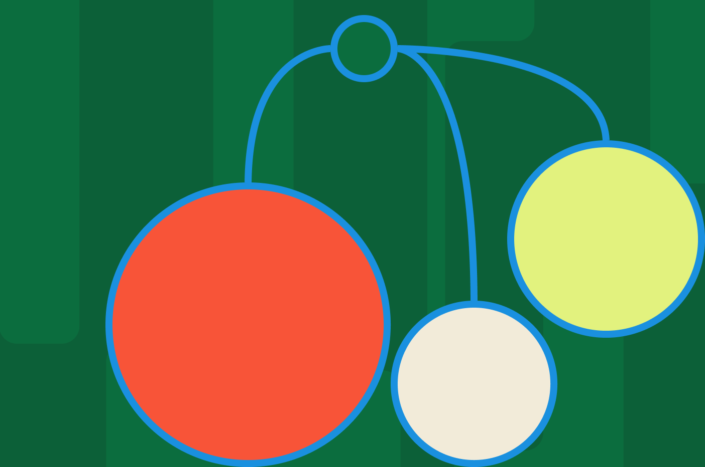
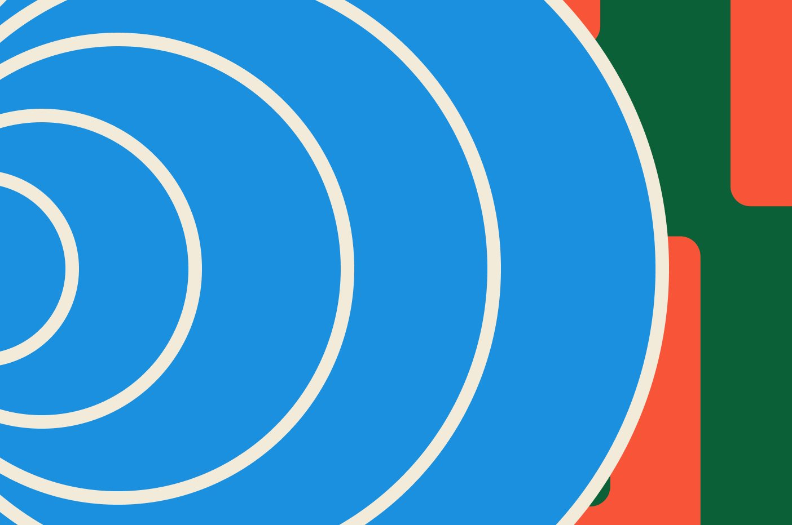
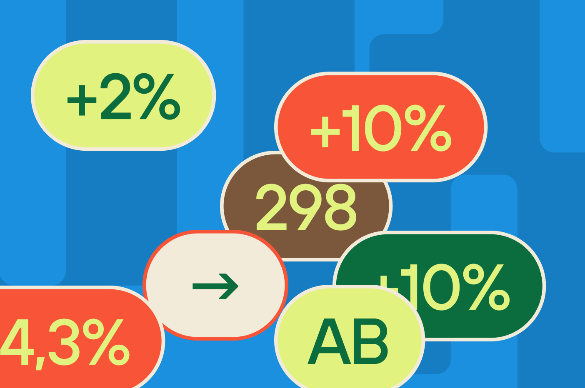
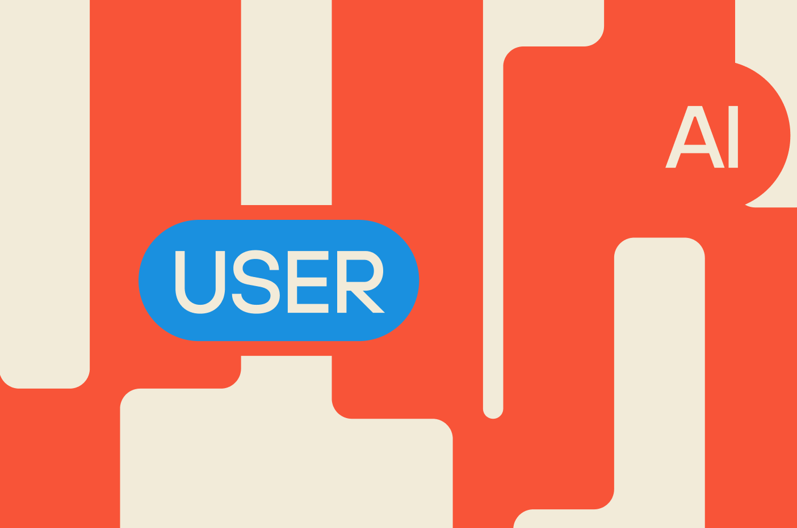
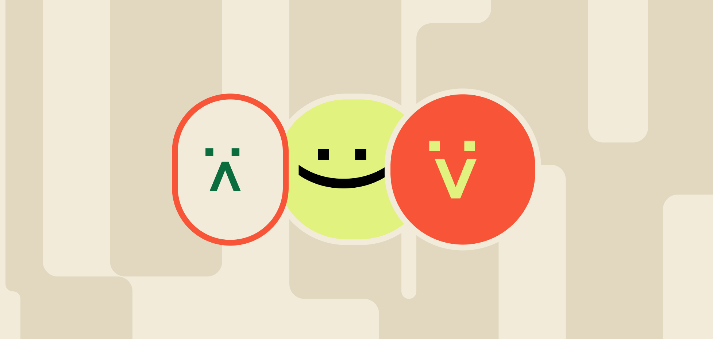
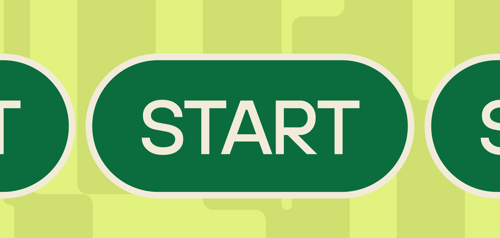
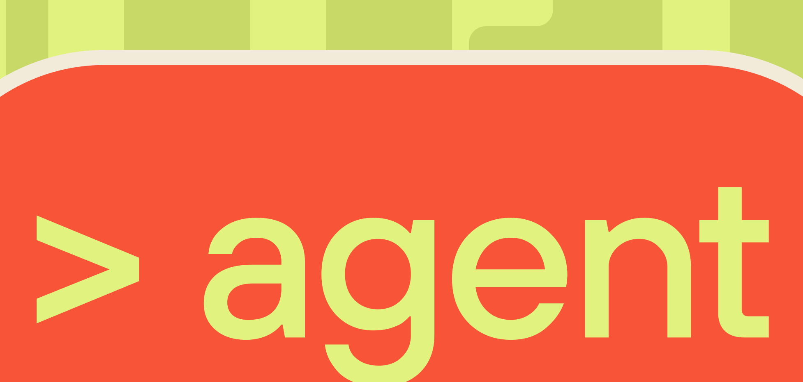
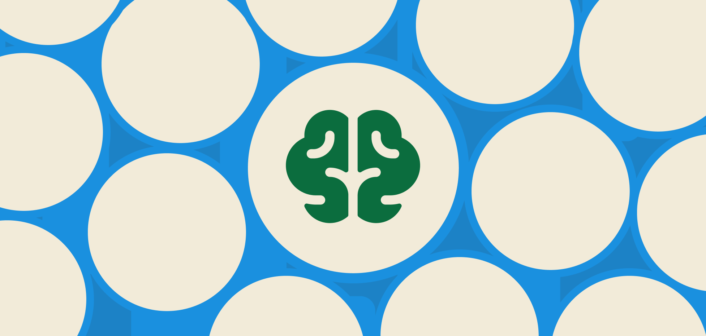
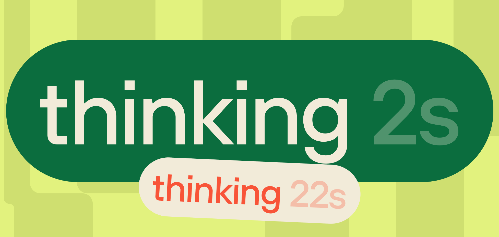

База знаний

Переход продуктов к AIUX
В последние годы сфера UX-дизайна претерпевает значительные изменения благодаря интеграции искусственного интеллекта.

Преимущества недетерминированных сценариев
Современные цифровые продукты всё реже существуют в условиях полной предсказуемости.

Проактивность как новая норма продуктов
Цифровые продукты больше не просто реагируют на действия пользователя — они начинают их предвосхищать.

Метрики ИИ-продуктов
ИИ-продукты меняют саму логику взаимодействия пользователя с интерфейсом.

Этика и границы ИИ перед человеком
С появлением ИИ-продуктов границы ответственности становятся размытыми.
Контекст как основной интерфейс
С появлением ИИ ключевым становится не то, куда нажать, а то, в каком контексте находится пользователь.

Дизайн неопределённости
ИИ разрушает одно из базовых предположений классического UX: что система ведёт себя предсказуемо.

Доверие как ключевая метрика
В ИИ-продуктах удобства уже недостаточно. Пользователь может легко воспользоваться системой — но при этом не доверять ей.
Интерфейс как диалог
ИИ меняет сам способ взаимодействия с продуктами. Вместо управления через элементы интерфейса появляется взаимодействие через язык.
Ошибка как часть опыта
В ИИ-продуктах ошибки становятся неотъемлемой частью опыта.

Онбординг в эпоху ИИ
Как знакомить пользователя с продуктом, который ведёт себя непредсказуемо?
Персонаж системы: как голос ИИ влияет на опыт
ИИ-продукты всё чаще обретают голос — буквальный и метафорический.

От экранов к агентам
Следующий шаг после диалогового интерфейса — автономные агенты, которые действуют от имени пользователя.

Память как функция интерфейса
Когда ИИ-система помнит прошлые взаимодействия, интерфейс перестаёт быть набором изолированных сессий.

Скорость восприятия в ИИ-продуктах
В ИИ-продуктах скорость — это не только время загрузки.